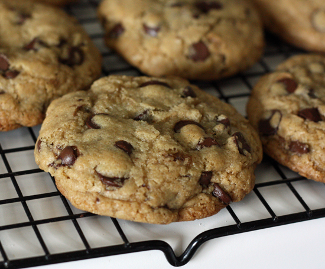
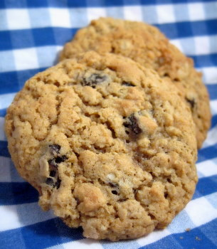

Excellence in Cookies.
This is Catherine's favorite Chocolate Chip cookie recipe, and therefore, by extension, it's my favorite as well. :)
Here's a stock picture of some chocolate chip cookies, because ours don't stick around long enough to be photographed.
When we first decided to try and have kids, Catherine looked for an egg-less cookie recipe, because apparently you're not supposed to eat raw egg when you're pregnant. And who can make cookies without eating at least a little cookie dough? Robots, that's who. So Catherine found this loverly recipe, and lovely it is!Although we've had no success in the "making kids" department *EDIT*we made a thing!*EDIT*, we've had excellent success in the "making cookie dough without eggs" department. And even if you manage to get the dough in the oven to make the cookies, they are absolutely DELECTABLE!
2 1/2 cups Flour
1 tsp. Baking Soda
1/2 tsp. Salt
3/4 cup Butter
1/2 cup Nuts (optional)
1/4 cup Sugar
1 1/2 tsp Vanilla (Kevin Miles Home-Made Vanilla Extract is the very best of the best!!)
4 Tbsp. Milk
1 cup Brown Sugar
1 cup Chocolate Chips (Guittard are the absolute best!)
Grease cookie sheet, bake at 350°f for 12-15 minutes.
Eat and enjoy!
Here's a stock picture of some chocolate chip cookies, because ours don't stick around long enough to be photographed.
 |
| Raisin cookies that look like chocolate chip cookies are the reasons I have trust issues. |
{kind=link}
When we first decided to try and have kids, Catherine looked for an egg-less cookie recipe, because apparently you're not supposed to eat raw egg when you're pregnant. And who can make cookies without eating at least a little cookie dough? Robots, that's who. So Catherine found this loverly recipe, and lovely it is!
2 1/2 cups Flour
1 tsp. Baking Soda
1/2 tsp. Salt
3/4 cup Butter
1/2 cup Nuts (optional)
1/4 cup Sugar
1 1/2 tsp Vanilla (Kevin Miles Home-Made Vanilla Extract is the very best of the best!!)
4 Tbsp. Milk
1 cup Brown Sugar
1 cup Chocolate Chips (Guittard are the absolute best!)
Grease cookie sheet, bake at 350°f for 12-15 minutes.
Eat and enjoy!
 |
| Pictured: A filthy imposter! |
{kind=link}